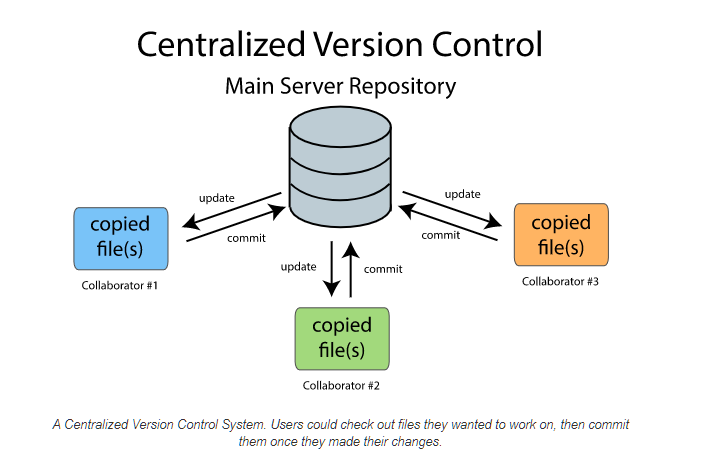
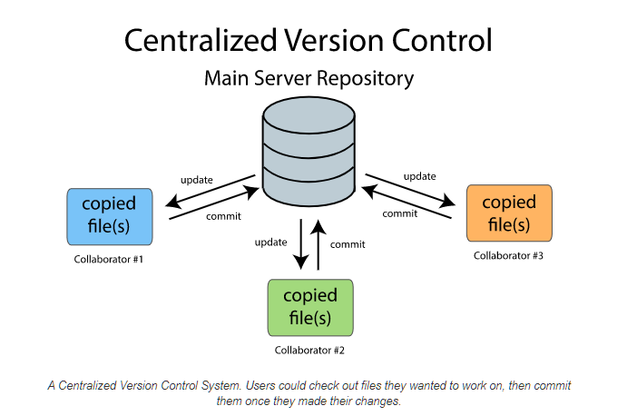

Git Best Practices.
Created by Rob Tompkins (chtompki)
Presentation Address: http://www.robtompkins.com/git-course
What makes git different?
Distributed vs Centralized.
 

What does this mean...a distributed source control system??
- We'll have to change the meanings of the words we use.
- What is a commit, how do I get code to a shared location?
- I have a local complete copy of the central repository (at a point in time)
Fork and Clone
- Common location for sharing code for use across all Apache projects.
- Was jakarta commons (jakarta being the apache java project).
- Note. The Eclipse Foundation has recently (September 10, 2019) co-opted the name for their Java EE work. (We at Apache are supportive of this as well)
What is the Apache Commons Project?
- Current mission: Provide a place for other ASF projects to come together, collaborate and share common code.
- Committers from any Apache project can request commit privileges.
Apache Commons Today
- A collection of 33 independent java projects.
- The most popular projects are (based on github's stars):
- commons-lang3
- commons-io
- commons-collections
- commons-math
- commons-pool
What are the benefits of open source software?
- Standardization of libraries.
- More eyes = fewer bugs.
- Long term support.
[Benedikt] Ritter's Law
Everything that is not part of our domain/business logic or the crazy legacy systems with which we need to integrate has already been developed by somebody much smarter than we are....
Don't re-invent the wheel!
Why did I get involved?
- I thought that I would have "spare time" during the paternity leave for my second daughter's birth.
- To keep my mathematics sharp(er).
- Career advancement?
- You're not constrained by timelines...you can get it right.
Ok, so what do you do to get involved?
- Pick a subject that you're passionate about.
- Pick a project that you already work with regularly.
- If it's on git check the stats page to see who frequent committers are. For example consider this github contributors page

How to ask people what to work on?
- Find emails or mailing lists.
- For example consider this link from the
[lang]README.md: user mailing list. - Email someone directly.

How do I figure out what to work on?
- Tests, tests, and more tests.
- No one has 100% coverage, there's always room for test improvements.
- Find a ticket. My first major contribution other than tests was
LANG-1252.
- After 4 months of writing tests.
Becoming familiar with the community
- Read the documentation on all project aspects.
-
Don't be afraid to weigh in on mailing list discussions, but do be polite
- Try to stick to +/- 0 votes
On ASF Style voting.
- +1 - Yes.
- +0 - I'm ok with this, but I think it has issues.
- -0 - I'm ok with this, but I'd like to express a dissenting opinion because I see potentially veto-worthy issues.
-
-1 - Veto.
On ASF Style Voting.
- Voting used in a variety of capacities:
- Concensus building (non-formal)
- Proposals (formal): -1 veto's the proposal all together
- [LAZY] votes - silence gives assent
- Package Releases.
- With package releases, majority approval holds, provided there are at least 3 PMC +1 votes. "-1's" can transpire, but we in Commons take them quite seriously.
Regarding privileges
(commit, voting, establishing votes, ect.)
Clearly this is all community dependent, but commons (and Apache generally) has the following:
- user - anyone consuming the software.
- contributor - anyone who has made a contribution.
-
committer - anyone who can commit directly
- Can make any changes to site or component.
- Can present votes.
- Can perform releases (according to the process).
Regarding privileges
(commit, voting, establishing votes, ect.)
- committee member - has voting privileges
- Voting privileges particularly matter with releases, new components, and such.
- Proposing new committers.
- committee chair - prepares the quarterly reports......ugh.
After I got commit rights.
- Asked Benedikt, and Gary what they thought I should do.
[text], a sandbox component, needed to be taken out.- Read up on release process:
Releasing Components.
- Beta release.
- Two dot releases.